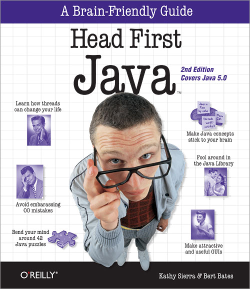
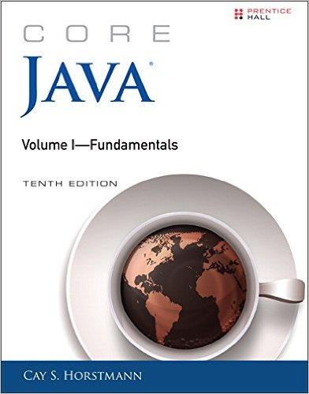

Dù bạn là người mới học hay là người đã có nhiều kinh nghiệm về Java thì tôi vẫn hy vọng những quyển sách tôi sẽ chia sẻ dưới đây có thể giúp ích phần nào cho việc củng cố kiến thức cũng như kỹ năng của các bạn.
1. Effective Java, 2nd Edition
Đây là quyển sách khá hay và bao quát về Java mà tôi đã từng đọc và tôi nghĩ khá nhiều bạn Java developer cũng đọc quyển này. Nó không chỉ dành cho người mới bắt đầu mà còn rất phù hợp với những lập trình viên có kinh nghiệm, giúp bạn tìm hiểu những nguyên lý lập trình tốt và cách tối ưu mã nguồn. Cuốn sách này cung cấp các khái niệm rất quan trọng như Generics, Enums, Annotations, và Concurrency, đồng thời nêu bật những lỗi thường gặp trong quá trình lập trình và cách tránh chúng.
- Giới thiệu về Generics và cách sử dụng chúng để giảm thiểu lỗi khi lập trình.
- Giải thích cách sử dụng Annotations và các ứng dụng thực tế trong các dự án lớn.
- Hiểu về Concurrency và các kỹ thuật lập trình đa luồng giúp chương trình chạy hiệu quả hơn.
- Giới thiệu các thư viện và API quan trọng như java.io, java.lang, java.util, java.util.concurrent.
Cuốn sách Effective Java rất quan trọng đối với các lập trình viên Java.
2. Head First Java, 2nd Edition
Quyển sách này có cách trình bày vô cùng độc đáo. Sách giải thích chi tiết các vấn đề về Java một cách rõ ràng và trực quan thông qua hình ảnh minh họa sinh động. Đây là một cuốn sách tuyệt vời dành cho những người mới bắt đầu, nó giúp bạn làm quen với các khái niệm cơ bản của lập trình Java như lớp, đối tượng, kế thừa, và đa hình. Thông qua các bài tập thú vị, bạn sẽ được thực hành ngay lập tức để củng cố kiến thức vừa học.
- Phương pháp học trực quan và dễ hiểu thông qua hình ảnh và ví dụ cụ thể.
- Giới thiệu cơ bản về các khái niệm lập trình hướng đối tượng trong Java.
- Giải thích cách hoạt động của JVM và cách tối ưu hiệu suất khi lập trình.
Cuốn sách Head First Java, 2nd Edition rất quan trọng đối với các lập trình viên Java.
3. Java in a Nutshell, 6th Edition
Quyển sách này sẽ là người bạn đồng hành lý tưởng trong suốt hành trình học Java của bạn. Nó giúp bạn nắm vững những thay đổi quan trọng trong Java 8 và cung cấp các thông tin chi tiết về cách sử dụng các API của Java. Nếu bạn là một lập trình viên có kinh nghiệm, cuốn sách này sẽ giúp bạn hệ thống lại kiến thức và cập nhật những thay đổi trong Java qua các phiên bản.
- Giới thiệu chi tiết về Java 8 và các tính năng mới như Lambda expressions và Stream API.
- Phân tích các cấu trúc dữ liệu và thuật toán trong Java, giúp bạn áp dụng vào các tình huống thực tế.
- Đưa ra những phương pháp tối ưu hiệu suất khi sử dụng các thư viện trong Java.
Cuốn sách Java in a Nutshell, 6th Edition rất quan trọng đối với các lập trình viên Java.
4. Core Java Volume I – Fundamentals, 10th Edition
Quyển sách này bao quát những điểm mới trong Java 8 và rất nhiều ví dụ thực tế giúp bạn hiểu sâu hơn về các khái niệm trong Java. Những bài học từ cuốn sách này sẽ giúp bạn làm chủ các kỹ thuật lập trình cốt lõi của Java, như xử lý ngoại lệ, các API của Java Collections, và cách sử dụng các lớp trong thư viện java.util và java.io. Nó rất thích hợp cho những lập trình viên muốn nâng cao kỹ năng lập trình của mình và áp dụng những kiến thức này vào các dự án thực tế.
- Giới thiệu các tính năng mới trong Java 8 như các loại biểu thức Lambda, các phương thức mặc định, và Stream API.
- Chi tiết về các lớp và thư viện cơ bản trong Java như java.util, java.io và java.nio.
- Ứng dụng các khái niệm lập trình hướng đối tượng vào các dự án Java lớn.
Cuốn sách Core Java Volume I – Fundamentals, 10th Edition rất quan trọng đối với các lập trình viên Java.
Xem thêm về các sách tại các cửa hàng trực tuyến hoặc tại các thư viện.